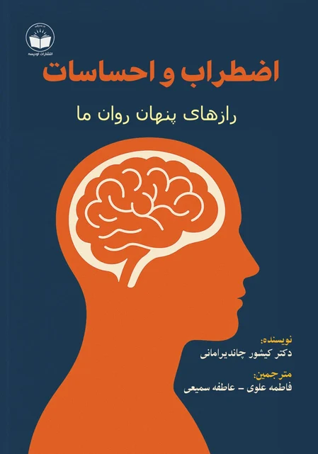
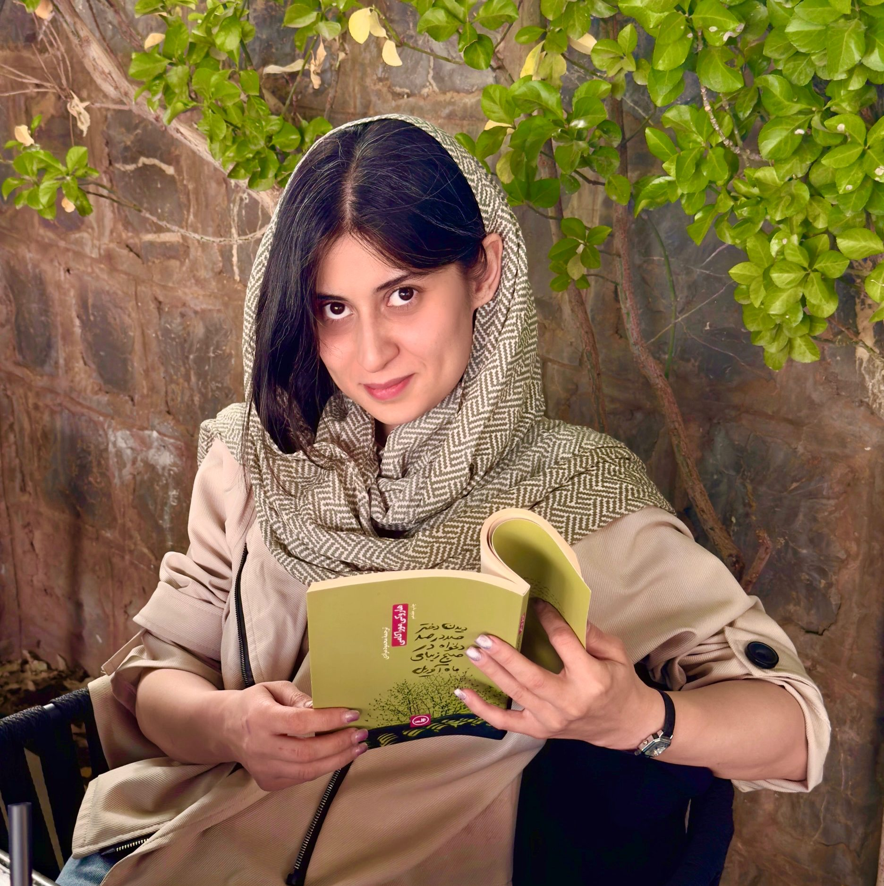

اضطراب و احساسات رازهای پنهان روان ما
نویسنده: دکتر کیشور چاندیر امانی
مترجمین: فاطمه علوی - عاطفه سمیعی
نویسنده، دکتر چاندیرامانی، روانپزشکی است که تجربه چند دهه کار در زمینه سلامت روان را
دارد و سعی کرده است نقطه تلفیقی بین دیدگاه علمی و روشهای عملی برای مدیریت استرس و
احساسات را ارائه دهد.
این کتاب به موضوعاتی مانند:
-
تعریف استرس و منشأ آن
-
نحوه پردازش احساسات در ذهن
-
تأثیر احساسات بر افکار، رفتارها و تصمیمات
-
روشهایی برای کنترل و مدیریت احساسات منفی
-
موضوعات مربوط به سبک زندگی، روابط، عشق و جنبههای رواندرمانی
-
روند بهبود و بازگشت از فشارهای ذهنی
-
معرفی تمرینها، جلسات صوتی خلاصه شده و ابزارهای کمکی
میپردازد.



من فاطمه علوی هستم کارشناس مترجمی از سال ۱۳۹۷
من فاطمهام، سیساله؛ از همان سالهای دبستان، خواندن و نوشتن برایم دروازهای به جهانهای
تازه بود.
با کتابها سفر میکردم، میآموختم و با واژهها بزرگ شدم.
چند داستان نوشتم که در مجلهی «سمپاد» منتشر شدند و همانجا فهمیدم قدرت واژه، قدرتِ زیستن
است.
سالها بعد، مترجمی زبان انگلیسی خواندم و تدریس را آغاز کردم.
ترجمه برای من فقط انتقال معنا نیست؛
دمیدنِ جان در کلماتِ زبانی دیگر است.
اکنون دوباره به دنیای کتاب بازگشتهام، جایی که نوشتن، خواندن و ترجمه در هم میتنند و
جهان مرا معنا میکنند.
چند سوال و پاسخ کوتاه
در مورد کتاب
دکتر چاندیرامانی قصد دارد نشان دهد که احساسات و استرس دو نیروی جدا از هم نیستند، بلکه بهصورت متقابل بر یکدیگر تأثیر میگذارند. هدف او کمک به خواننده است تا از طریق شناخت ریشههای درونی احساسات، بتواند استرس خود را کنترل کرده و از درگیریهای ذهنی رها شود. او بر این باور است که مدیریت مؤثر احساسات، پایهی سلامت روان و رشد فردی است.
در این کتاب، احساسات بهعنوان واکنشهای طبیعی ذهن و بدن در برابر نیازها و موقعیتهای محیطی معرفی میشوند. نویسنده تأکید دارد که احساسات ذاتاً بد نیستند، بلکه واکنشهای غیرآگاهانهی ما به آنهاست که میتواند باعث رنج، اضطراب یا تعارض شود. او احساسات را همانند «پیامرسانهای درونی» میبیند که اگر درست فهمیده شوند، میتوانند راهنمای رشد درونی باشند.
چاندیرامانی استرس را نه یک دشمن مطلق، بلکه نوعی «سیستم هشدار طبیعی» میداند. او میگوید استرس زمانی خطرناک میشود که فرد نتواند پاسخ سالمی به آن بدهد یا در چرخهی نگرانیهای ذهنی گیر کند. کتاب بهویژه بر اهمیت تعادل میان «چالش» و «آرامش» تأکید دارد؛ یعنی اینکه کمی استرس برای رشد لازم است، اما افراط در آن موجب فرسودگی روان میشود.
نویسنده ترکیبی از روشهای علمی و معنوی را پیشنهاد میکند؛
از جمله:
- خودآگاهی و مشاهدهی بدون قضاوت احساسات
- تمرینات تنفسی و مدیتیشن ذهنآگاهانه (Mindfulness)
- تغییر الگوهای فکری منفی با استفاده از خودگفتوگوهای مثبت
- پذیرش احساسات بهجای سرکوب آنها
- تقویت روابط انسانی سالم و ارتباط شفاف
این روشها به گفتهی او باعث بازگشت تعادل روانی و آرامش درونی میشوند.
پیام نهایی کتاب این است که آرامش بیرونی تنها زمانی پایدار است که آرامش درونی برقرار باشد. برای رسیدن به این حالت، باید یاد بگیریم احساسات خود را درک کنیم، بهجای جنگیدن با آنها، آنها را بپذیریم و از استرس بهعنوان فرصتی برای رشد استفاده کنیم. نویسنده معتقد است: «احساسات اگر به درستی فهمیده شوند، نه دشمن بلکه معلمی صادقاند.»